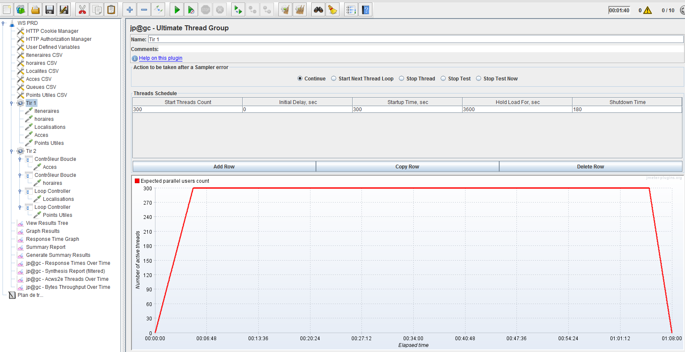
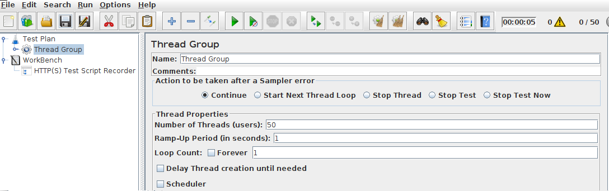
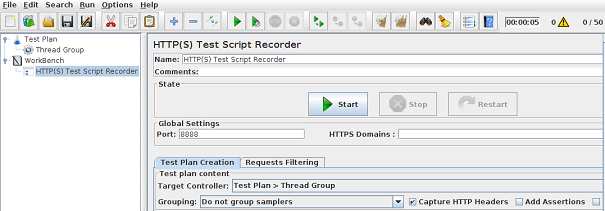
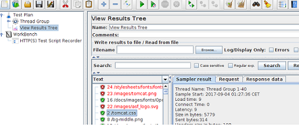
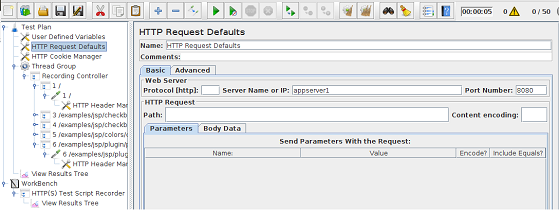

First of all, download plugins-manager.jar and put it into lib/ext. Install theses interesting plugins:
Customer Thread Groups : Stepping Thread Group and Concurrency Thread Group. 
jpgc Standard Set
Create and Configure a Thread Group:

set the number of simultanuous users
Create a recorder:

Set Controler target to the created thread-group
Configure the browser proxy:
proxy as localhost:8888
Thread : virtual user
Test Plan>Add>Listener>View Results Tree 

https://guide.blazemeter.com/hc/en-us/articles/207421395-Using-User-Defined-Variables
https://guide.blazemeter.com/hc/en-us/articles/206733689-Using-CSV-DATA-SET-CONFIG
$ cat ids.txt
23238092
0928274
8823900232-236
Define a user variable date. And var name for CSV data is id.
Finally define Request with path
/${id}-${date}/maps/api/geocode/xml?address=1600+Amphitheatre+Parkway,+Mountain+View,+CA&sensor=false
Timer has scope. If the timer is defined in threadGroup level, a delay is made in each request of the threadGroup.
To insert a delay between loops,
Threadgroup
>>Loop
>>>>req
>>Simple Controller
>>>>constant timer
>>>>any dummy sampler (say debug sampler, or a http request url)
./jmeter -n -t ~/magOS/documentation/files/Mysql-JDBC-Test.jmx
WS Scenario example: here
Generate an HTML report. see: http://jmeter.apache.org/usermanual/generating-dashboard.html
For each listner set this:
Write result To File: D:\ABR\APP\results\app-perfs.jtl
Update Files:
reportgenerator.properties
user.properties
see:
https://jmeter.apache.org/usermanual/generating-dashboard.html
After end of Load test, the file gaia-perfs.jtl is generated, to generate report:
.\jmeter.bat -g D:\ABR\GAIA\results\gaia-perfs.jtl -o D:\ABR\GAIA\reports\Tirs1